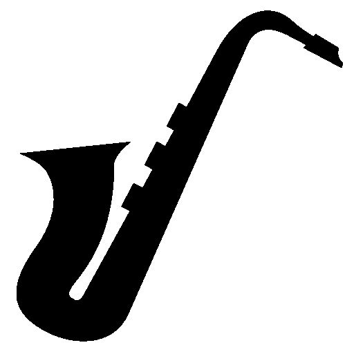
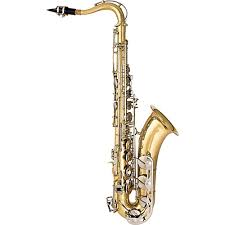
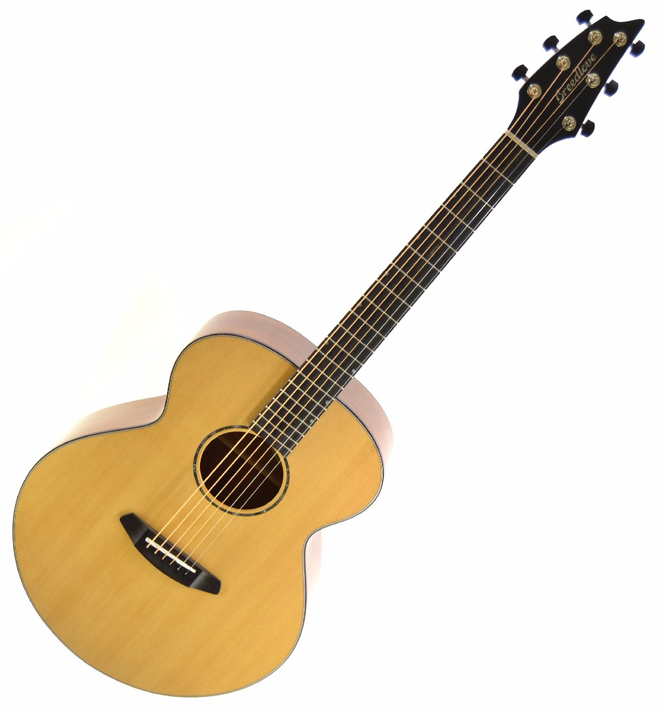
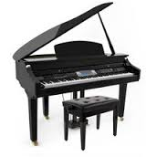
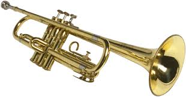
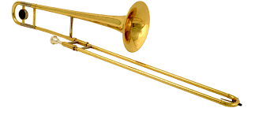

Course Description
 An ensemble course which stresses development of good performance techniques using a wide variety of jazz styles. Students will be required to perform several times outside of class both individually and as a group throughout the semester (in correlation with Tennessee Music Standards 2.1, 2.2, 2.3, 2.4, 2.5, 5.1, 5.2, 6.1, 6.2, 7.1, 7.2, 8.1, 8.2, 9.1, 9.2).
General Course Objectives
- To advance and improve the ability to perform at a satisfactory level on the student's chosen instrument in a jazz band setting
- To gain a fundamental knowledge of music terminology, theory, styles and literature as pertaining to jazz music
- To develop a knowledgeable basis for making value judgments about jazz music
- To develop and display student's musical abilities within the format of a jazz ensemble as well as develop individually as a jazz musician in the art of improvisation
Prerequisites/Requirements
9th Grade Instrumental Music and/or instructor's permission.
Eligible Instruments
- A
- Alto Saxophone
- B
 Baritone Saxophone
Baritone Saxophone Bass Guitar
Bass Guitar- D
 Drum Kit
Drum Kit- G
- Guitar
- P
- Piano
- T
- Trumpet
 Tenor Saxophone
Tenor Saxophone- Trombone
Other instruments in question would be by director discretion and audition only.